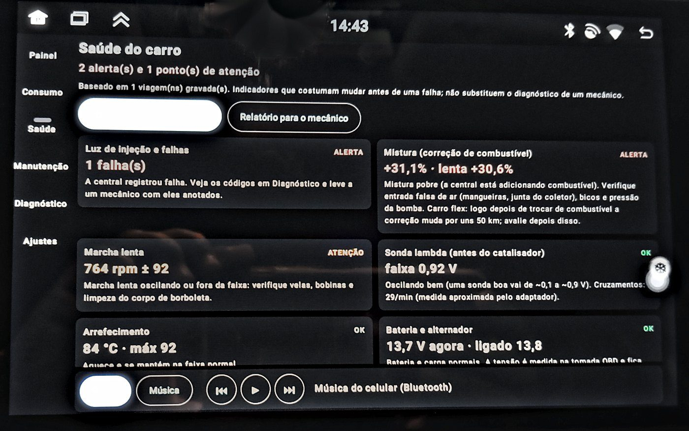

Projeto de pai e filho
Eu e meu pai transformamos o multimídia do carro dele em um scanner de diagnóstico.

Kotlin · OBD2 · FirebaseArraste para ver o código →
Pela tomada OBD2, o app pergunta e a central do motor responde. Rotação é o PID 0C:
> 010C // modo 01, PID 0C: rotação 41 0C 1A F8 > 010D // velocidade 41 0D 32
RPM(0x0C, "Rotação", "rpm", 2, { (256.0 * it[0] + it[1]) / 4.0 }) // 0x1A = 26, 0xF8 = 248 // (256 × 26 + 248) / 4 = 1726 rpm
Sem o fluxo de ar (MAF), dá para estimar pela pressão do coletor, rotação e temperatura, com a física dos gases:
fun mafFromMap(mapKpa, rpm, intakeC, engine) { // densidade do ar: p / (R · T) val rho = mapKpa * 1000.0 / (GAS_CONSTANT * (intakeC + 273.15)) // ar aspirado por segundo (motor 4 tempos) val vol = rpm / 120.0 * engine.displacementL / 1000.0 return rho * engine.volumetricEfficiency * vol * 1000.0 }
Marcha lenta: 40 kPa, 800 rpm, 30 °C, motor 1.6 → 3,92 g/s de ar → litros por hora → km/l.
A conta estava certa; o motor real é que não era o do livro. No papel, o app gastava 2,5 vezes mais combustível que o carro na estrada.
// trajeto do app x trajeto do painel do carro fun factorFromCarComputer( current, ourKmPerL, carKmPerL) = max(MIN_FACTOR, min(MAX_FACTOR, current * ourKmPerL / carKmPerL)) // teste com os números do carro factorFromCarComputer(1.0, 5.1, 12.8) → 0,40
Agora cada tanque cheio ajusta o fator sozinho. Lição: dado real corrige teoria.
Uma falha guardada na central, com a luz da injeção apagada.
Mistura 31% pobre (correção de combustível da central).

Tudo fica primeiro no aparelho, separado por carro, e funciona sem internet:
preço, litros, posto
nível, até 600 pontos
saúde do motor
3.600 leituras em CSV
// ler, alterar e gravar sem ninguém gravar no meio fun updateRefuels( transform: (List<Refuel>) -> List<Refuel> ) = synchronized(lock) { val novo = transform(refuels()) saveRefuels(novo); novo }
trajeto, nível do tanque e hodômetro seguem o carro de um celular para o outro
abastecimentos, manutenção, postos, viagens. Vale a versão mais nova
// "impressão digital" dos dados a cada 30 s val h = impressao(ctx, store) if (h != store.dadosHash) { store.dadosHash = h store.dadosMs = currentTimeMillis() // carimbo mudancaSeq.incrementAndGet() // pendente }
} catch (e: Exception) { registrar("erro ao ler dados da nuvem") // primeiroTudo continua false: // tenta ler a cada 30 s, para sempre }
} catch (e: Exception) { primeiroTudo = true // libera o envio registrar("os dados daqui vão subir") } // os dados bons do celular consertam a nuvem
Nenhum teste pegou. Foi a leitura atenta do código na revisão.
$ node tools/verify-formulas.js ok RPM 41 0C 1A F8 = 1726 ok MAF estimado por MAP (g/s) = 3.92 ok km/l instantâneo 60 km/h a 5 L/h = 12 ok Fator pelo painel: 5,1 x 12,8 = 0.40 ... 63 verificações passaram. $ gradle testMultimidiaDebugUnitTest BUILD SUCCESSFUL · 226 testes
As mesmas fórmulas em Kotlin e em JavaScript, com os mesmos números. E uma regra fixa: o app só lê, nunca escreve na central do carro.
Dado persistido é promessa. Pensar no que acontece quando a internet cai, o carro desliga ou dois aparelhos gravam juntos.
O mundo real é o teste final. 6,2 contra 12,8 km/l me ensinou mais que qualquer tutorial.
IA acelera, revisão protege. Fizemos com o Claude Code, mas ler o código continua sendo nosso trabalho.
Qual carro a gente deve testar a seguir? 👇